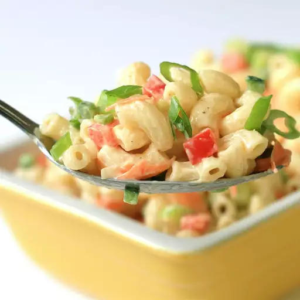

Macaroni Salad

Description
This Deli style Macaroni is sure
to knock your socks off. Its got so
much flavor you'll never want to eat
normal old macaroni again.
Ingredients
Dressing:
- 1 cup mayonnaise
- ¼ cup white vinegar
- 2 tablespoons Dijon mustard
- 2 teaspoons kosher salt, more to taste
- ½ teaspoon ground black pepper
- ⅛ teaspoon cayenne pepper
- 1 tablespoon white sugar, or more to taste
- 1 cup finely diced celery
- ¾ cup diced red bell pepper
- ½ cup grated carrot
- ½ cup chopped green onions, white and light parts
- ¼ cup diced jalapeno pepper
- ¼ cup diced poblano pepper
Macaroni:
- 1 (16 ounce) package uncooked elbow macaroni
- 1 tablespoon water (optional)
- 1 tablespoon mayonnaise (optional)
Steps
- Whisk mayonnaise, vinegar, Dijon, salt, black pepper, and cayenne
together in a bowl until well blended. Whisk in sugar, then
stir in celery, bell pepper, carrot, green onions, jalapeno pepper
and poblano pepper. Cover and refrigerate until macaroni is ready
- Bring a large pot of generously salted water to a boil. Boil
macaroni in the boiling water, stirring occasionally, until tender
but firm to the bite, about 8 minutes. Drain but do not rinse.
- Let macaroni drain in a colander for about 5 minutes, shaking out the
moisture from time to time. Pour macaroni into a large bowl; toss to
separate and let cool to room temperature, 10 to 15 minutes. Macaroni
should be sticky.
- Pour dressing over macaroni and stir until evenly distributed. Cover
and refrigerate until macaroni absorbs the dressing, at least 4 hours
or overnight if possible.
- Stir salad before serving. Mix water and remaining mayonnaise
into salad for a fresher look.